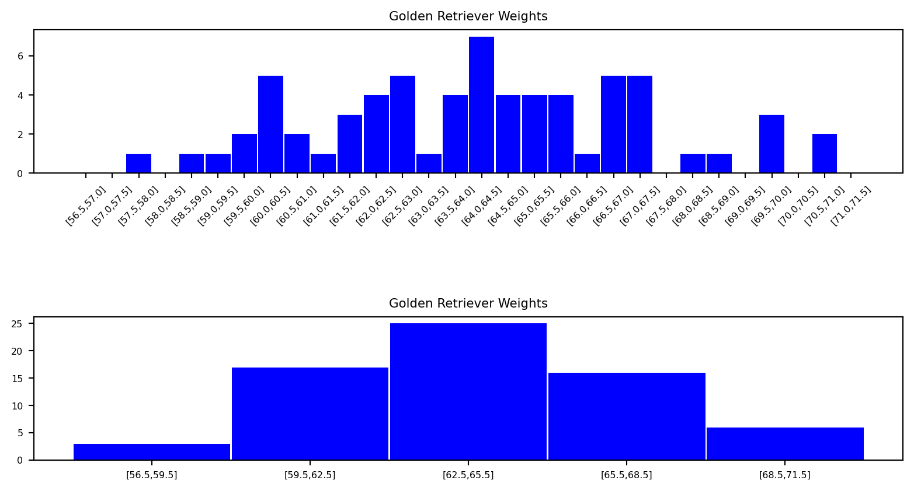

Main notions
Often we are interested in studying a group that is too large to observe, for example the average height of adults in the UK, and we have to resort to using only a few members of that group to infer conclusions about them. As you can guess, this is not easy to get right. After all, we are trying to represent a population with a sample that may not be representative.
1.3 Definition
A population is the collection of objects or people under discussion, which can be both finite and infinite.
Examples of populations could be “all Swansea University students”, “all adults in the UK”, or “all Golden Retrievers in Scotland”.
If we are going to infer attributes about a population based on a sample, it’s important the sample be as random as possible so we do not skew our conclusions, i.e. we want to avoid bias.